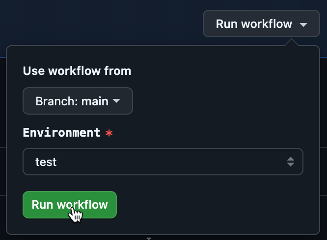
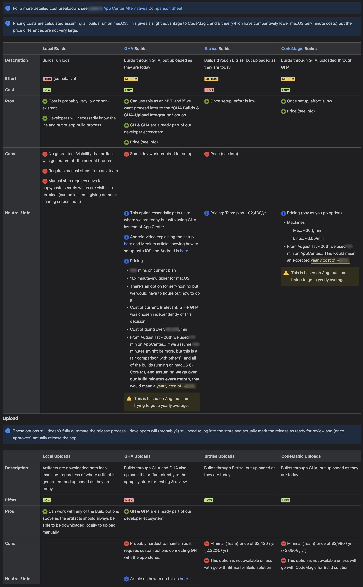

Why GHA?
This seems like a lot of work... Why not go with an off-the-shelf solution from something like Bitrise or Codemagic? Fair question but not the main point of this post. To look into our reasoning check out the Benefits section!
Some notes before we get started
- We use this workflow to build two apps, one of which can be white-labeled, so we have additional
app and white-label-release inputs which makes things a bit trickier. You might not need that so feel free to trim stuff down and make it your own! But for us, we why we have the env-variable-prep-android.sh which normalizes the variable names used for secrets so those secrets and build file names, etc. can be easily used. If you just have a single app you probably don't need this script.
- The code below is only for the build process. Though the ADR considered how this would affect future decisions about artifact upload automation and rolling out releases for internal testing, nothing about that is automated here.
Implementation
Part 1 - Basic Setup
Add the files below. Nothing in this setup should effect App Center but it is good to check in your changes to a branch and test those against the regular App Center build flow.
| Android |
iOS |
# file: .github/workflows/mobile-apps-build-android.yaml
---
name: Mobile App Build for Android
run-name: "Build: Android, ${{ inputs.app }}, ${{ inputs.environment }}, white-label-release=${{ inputs.white-label-release }}"
on:
workflow_dispatch:
inputs:
app:
description: 'App'
required: true
type: choice
options:
- my-first-app
- my-second-app
environment:
description: 'Environment'
required: true
type: choice
options:
- test
- acceptance
- production
white-label-release:
description: 'White-labeled Release?'
type: boolean
default: false
jobs:
build:
name: Build app for android
runs-on: ubuntu-latest
environment: ${{ inputs.environment }}
steps:
- name: Checkout ${{ github.repository }}
uses: actions/checkout@v4.2.2
- name: Echo Input
env:
APP: ${{ inputs.app }}
WHITE_LABEL_RELEASE: ${{ inputs.white-label-release }}
ENVIRONMENT: ${{ inputs.environment }}
run: |
echo "APP=$APP"
echo "WHITE_LABEL_RELEASE=$WHITE_LABEL_RELEASE"
echo "ENVIRONMENT=$ENVIRONMENT"
|
# file: .github/workflows/mobile-apps-build-ios.yaml
---
name: Mobile App Build for iOS
run-name: "Build: iOS, ${{ inputs.app }}, ${{ inputs.environment }}, white-label-release=${{ inputs.white-label-release }}"
on:
workflow_dispatch:
inputs:
app:
description: 'App'
required: true
type: choice
options:
- my-first-app
- my-second-app
environment:
description: 'Environment'
required: true
type: choice
options:
- test
- acceptance
- production
white-label-release:
description: 'White-labeled Release?'
type: boolean
default: false
jobs:
build:
name: Build app for iOS
runs-on: macos-latest
environment: ${{ inputs.environment }}
steps:
- name: Checkout ${{ github.repository }}
uses: actions/checkout@v4.2.2
- name: Echo Input
env:
APP: ${{ inputs.app }}
WHITE_LABEL_RELEASE: ${{ inputs.white-label-release }}
ENVIRONMENT: ${{ inputs.environment }}
run: |
echo "APP=$APP"
echo "WHITE_LABEL_RELEASE=$WHITE_LABEL_RELEASE"
echo "ENVIRONMENT=$ENVIRONMENT"
|
# file: env-variable-prep-android.sh
#!/bin/bash
ARTIFACT_NAME="mobile-my-first-app-${ENVIRONMENT}-release"
FASTLANE_ANDROID_FLAVOR="${ENVIRONMENT}"
{
echo "artifact-name=${ARTIFACT_NAME}"
echo "fastlane-android-flavor=${FASTLANE_ANDROID_FLAVOR}"
} | tee -a "$GITHUB_OUTPUT"
# Secrets should not get sent out over tee command (which also prints it to console)
{
echo "android-key-alias=my-first-app"
echo "android-keystore-file=../keystores/my-first-app.jks"
echo "android-keystore-pass=${ANDROID_KEY_PASSWORD}"
echo "android-store-pass=${ANDROID_STORE_PASSWORD}"
} >> "$GITHUB_OUTPUT"
|
# file: env-variable-prep-ios.sh
#!/bin/bash
# Secrets should not get sent out over tee command (which also prints it to console)
{
echo "ios-mobile-provisioning-profile=${IOS_MOBILE_PROVISIONING_PROFILE}"
} >> "$GITHUB_OUTPUT"
|
# file: env-file-prep.sh
#!/usr/bin/env bash
#####################################################
# Creates an .env file for use in react-native-config
# This script should be run from the /mobile folder
#####################################################
if [ "${ENVIRONMENT}" != "test" ] && [ "${ENVIRONMENT}" != "acceptance" ] && [ "${ENVIRONMENT}" != "production" ]; then
echo "ENVIRONMENT is not set, using 'production' as default."
ENVIRONMENT=production
fi
echo "Copying 'my-first-app/.env.${ENVIRONMENT}' to 'my-first-app/.env'..."
cp "my-first-app/.env.${ENVIRONMENT}" "my-first-app/.env"
echo "Success!"
|
# file: ./fastlane/Fastfile
opt_out_usage
platform :android do
desc 'Build app for Android'
lane :build do
build_android_app(
task: 'bundle',
flavor: ENV['FASTLANE_ANDROID_FLAVOR'],
build_type: 'Release',
project_dir: 'android/',
print_command: true,
print_command_output: true,
)
end
end
|
N/A for iOS
|
N/A for Android
|
# file: ./fastlane/Gymfile
scheme(ENV['SCHEME'])
workspace("ios/my-first-app.xcworkspace")
export_options("ios/exportOptions.plist")
output_directory("ios/build")
output_name(ENV['SCHEME'])
|
Part 2 - Testing your Workflow Locally
WARNING: GitHub Actions doesn't let you run a workflow_dispatch action until it has been merged into the main branch so you'll want to get the basic setup above in place before you start tinkering with application logic or things that could effect App Center. Also note that while act is helpful for getting the basics in place, it's unlikely you'll be able to test the complete process locally because, at least for us a) Android pipeline crashes halfway through the Build App step with an error of Gradle build daemon disappeared unexpectedly (it may have been killed or may have crashed), and b) iOS tries to install a fresh copy of Xcode
-
Follow installation instructions on their User Guide
-
Create a ~/.actrc file that looks like this
--container-architecture linux/amd64
--secret GITHUB_TOKEN=$GITHUB_TOKEN
-
Get your $GITHUB_TOKEN env variable in place
-
Install gh, the GitHub cli
-
Modify shells (zsh shown below)
export GITHUB_TOKEN="$(gh auth token)"
-
Close and re-open your terminal. Test to make sure you can see your GITHUB_TOKEN envrionment variable
-
Set up a temporary local file for secrets. WARNING: Once you’re done, remember to delete the file so it’s not hanging around on your system!! (or just don’t create it in the first place unless you really need it)
# file: .secrets
ANDROID_STORE_PASSWORD="someSecr3ts"
ANDROID_KEY_PASSWORD="YouWantQuotesBecause*s_etc.WillScrewYouUp"
MAPBOX_READ_TOKEN=shhhhh.Its.asecret
-
Set up a temporary local file for your workflow trigger inputs.
/* file: app-input.json */
{
"action": "workflow_dispatch",
"inputs": {
"app": "my-first-app",
"environment": "test",
"white-label-release": false
}
}
-
Run your workflow like this. As far as I know, you can only run the iOS workflow locally if you're on a mac. To do that you'll need to provide an additional parameter: -P macos-latest=-self-hosted
| Android |
iOS |
act \
--workflows .github/workflows/mobile-apps-build-android.yaml \
--eventpath="${HOME}/Documents/IT/GitHub Actions/Mobile Apps/app-input.json" \
--secret-file="${HOME}/Documents/IT/GitHub Actions/Mobile Apps/.secrets"
|
act -P macos-latest=-self-hosted \
--workflows .github/workflows/mobile-apps-build-ios.yaml \
--eventpath="${HOME}/Documents/IT/GitHub Actions/Mobile Apps/app-input.json" \
--secret-file="${HOME}/Documents/IT/GitHub Actions/Mobile Apps/.secrets"
|
Part 3 - Testing Things out from GHA
-
Once you're happy with your changes locally, send a PR & merge them in! Remember this is only the basic setup to get the action avaible from the GitHub Actions interface so maybe leave a comment in the PR notifying your teammates about how they should expect a follow-up PR
-
Go to the "Actions" tab at the top of your GitHub repo. You should now see your actions for building iOS and Android on the left. Since it's a workflow_dispatch action you'll trigger the actions manually.

Part 4 - Implement the Full Workflow for iOS and Android
Adjust the files below. This is where you may end up needing to modify things that affect your App Center build. Try to keep them to a mimimum so you can still use App Center for builds should anything here not work as expected.
| Android |
iOS |
# file: .github/workflows/mobile-apps-build-android.yaml
---
name: Mobile App Build for Android
run-name: "Build: android, ${{ inputs.app }}, ${{ inputs.environment }}, white-label-release=${{ inputs.white-label-release }}"
on:
workflow_dispatch:
inputs:
app:
description: 'App'
required: true
type: choice
options:
- my-first-app
- my-second-app
environment:
description: 'Environment'
required: true
type: choice
options:
- test
- acceptance
- production
white-label-release:
description: 'White-labeled Release?'
type: boolean
default: false
jobs:
build:
name: Build app for android
runs-on: ubuntu-latest
environment: ${{ inputs.environment }}
steps:
- name: Checkout ${{ github.repository }}
uses: actions/checkout@v4.2.2
- name: Prep Env Variables
id: prep-env-variables
working-directory: mobile
env:
APP: ${{ inputs.app }} # my-first-app | my-second-app
ENVIRONMENT: ${{ inputs.environment }} # production | test | acceptance
BRAND: ${{ inputs.white-label-release && 'other-company' || 'my-company' }}
APP_1_ANDROID_KEY_PASSWORD_VANDEBRON: ${{ secrets.APP_1_ANDROID_KEY_PASSWORD_VANDEBRON }}
APP_1_ANDROID_STORE_PASSWORD_VANDEBRON: ${{ secrets.APP_1_ANDROID_STORE_PASSWORD_VANDEBRON }}
APP_1_ANDROID_KEY_PASSWORD_WHITE_LABEL: ${{ secrets.APP_1_ANDROID_KEY_PASSWORD_WHITE_LABEL }}
APP_1_ANDROID_STORE_PASSWORD_WHITE_LABEL: ${{ secrets.APP_1_ANDROID_STORE_PASSWORD_WHITE_LABEL }}
APP_2_ANDROID_KEY_PASSWORD_VANDEBRON: ${{ secrets.APP_2_ANDROID_KEY_PASSWORD_VANDEBRON }}
APP_2_ANDROID_STORE_PASSWORD_VANDEBRON: ${{ secrets.APP_2_ANDROID_STORE_PASSWORD_VANDEBRON }}
run: bash ./env-variable-prep-android.sh
- name: Create .env file
working-directory: mobile
env:
APP: ${{ inputs.app }}
BRAND: ${{ steps.prep-env-variables.outputs.inferred-brand }}
ENVIRONMENT: ${{inputs.environment}}
run: bash ./env-file-prep.sh
- name: Enable Corepack
run: corepack enable
- name: Setup NodeJS
id: setup-node
uses: actions/setup-node@v4.2.0
with:
node-version: 18.x
registry-url: https://registry.npmjs.org
cache: 'yarn'
cache-dependency-path: mobile/${{ inputs.app }}/yarn.lock
- name: Setup Java
uses: actions/setup-java@v4.7.0
with:
distribution: 'temurin'
java-version: '20'
cache: 'gradle'
- name: Setup Android SDK # sadly no caching capabilities here
uses: android-actions/setup-android@v3.2.2
with:
log-accepted-android-sdk-licenses: false
packages: 'tools' # Default is 'tools platform-tools but we don't need platform-tools for packaging'
- name: Set up ruby env # Fastlane is a "Ruby gem"
uses: ruby/setup-ruby@v1
with:
ruby-version: '3.3.0' # Changing this to 3.3 will give you "Your Ruby version is 3.3.5, but your Gemfile specified 3.3.0"
bundler-cache: true
- name: Install Gem Bundler
working-directory: mobile/${{ inputs.app }}
run: |
gem install bundler
bundle install --quiet
# Install Dependencies
- name: Yarn Install
working-directory: mobile/${{ inputs.app }}
run: yarn install --immutable
# Build
- name: Build App
run: bundle exec fastlane android build
working-directory: mobile/${{ inputs.app }}
env:
ENVIRONMENT: ${{ inputs.environment }}
FASTLANE_ENV_INFERRED_BRAND: ${{ steps.prep-env-variables.outputs.inferred-brand }}
ANDROID_KEYSTORE_FILE: ${{ steps.prep-env-variables.outputs.android-keystore-file }}
ANDROID_KEY_ALIAS: ${{ steps.prep-env-variables.outputs.android-key-alias }}
ANDROID_STORE_PASSWORD: ${{ steps.prep-env-variables.outputs.android-store-pass }}
ANDROID_KEY_PASSWORD: ${{ steps.prep-env-variables.outputs.android-keystore-pass }}
FASTLANE_ANDROID_FLAVOR: ${{ steps.prep-env-variables.outputs.fastlane-android-flavor }}
# Upload
- name: Upload application
uses: actions/upload-artifact@v4
with:
name: ${{steps.prep-env-variables.outputs.artifact-name}}
path: "mobile/${{ inputs.app }}/android/app/build/outputs/bundle/${{ steps.prep-env-variables.outputs.fastlane-android-flavor }}Release/app-${{ steps.prep-env-variables.outputs.fastlane-android-flavor }}-release.aab"
retention-days: 30
|
# file: .github/workflows/mobile-apps-build-ios.yaml
---
name: Mobile App Build for iOS
run-name: "Build: iOS, ${{ inputs.app }}, ${{ inputs.environment }}, white-label-release=${{ inputs.white-label-release }}"
on:
workflow_dispatch:
inputs:
app:
description: 'App'
required: true
type: choice
options:
- my-first-app
- my-second-app
environment:
description: 'Environment'
required: true
type: choice
options:
- test
- acceptance
- production
white-label-release:
description: 'White-labeled Release?'
type: boolean
default: false
jobs:
build:
name: Build app for iOS
runs-on: macos-latest
environment: ${{ inputs.environment }}
steps:
- name: Checkout ${{ github.repository }}
uses: actions/checkout@v4.2.2
- name: Prep Env Variables
id: prep-env-variables
working-directory: mobile
env:
APP: ${{ inputs.app }} # my-first-app | my-second-app
BRAND: ${{ inputs.white-label-release && 'other-company' || 'my-company' }}
ENVIRONMENT: ${{ inputs.environment }} # production | test | acceptance
APP_1_MY_COMPANY_IOS_MOBILE_PROVISIONING_PROFILE: ${{ secrets.APP_1_MY_COMPANY_IOS_MOBILE_PROVISIONING_PROFILE }}
APP_1_OTHER_COMPANY_IOS_MOBILE_PROVISIONING_PROFILE: ${{ secrets.APP_1_OTHER_COMPANY_IOS_MOBILE_PROVISIONING_PROFILE }}
IOS_BUILD_CERTIFICATE_P12_OTHER_COMPANY: ${{ secrets.IOS_BUILD_CERTIFICATE_P12_OTHER_COMPANY }}
IOS_BUILD_CERTIFICATE_P12_PASSWORD_OTHER_COMPANY: ${{ secrets.IOS_BUILD_CERTIFICATE_P12_PASSWORD_OTHER_COMPANY }}
APP_2_IOS_MOBILE_PROVISIONING_PROFILE: ${{ secrets.APP_2_IOS_MOBILE_PROVISIONING_PROFILE }}
run: bash ./env-variable-prep-ios.sh
- name: Create .env file
working-directory: mobile
env:
APP: ${{ inputs.app }} # my-first-app | my-second-app
BRAND: ${{ steps.prep-env-variables.outputs.inferred-brand }}
ENVIRONMENT: ${{inputs.environment}}
run: bash ./env-file-prep.sh
- name: Import Build Certificate from Secrets
uses: apple-actions/import-codesign-certs@v3
with:
p12-file-base64: ${{ steps.prep-env-variables.outputs.ios-build-certificate-p12 }}
p12-password: ${{ steps.prep-env-variables.outputs.ios-build-certificate-p12-password }}
- name: Import Mobile Provisioning Profile
uses: nickwph/apple-provisioning-profile-action@v1.0.0
with:
profile-base64: ${{ steps.prep-env-variables.outputs.ios-mobile-provisioning-profile }}
- name: Setup NodeJS
id: setup-node
uses: actions/setup-node@v4.2.0
with:
node-version: 20.x
# Mapbox v10 ships with bitcode on XCode 16 which is not allowed by the App Store
# https://github.com/mapbox/mapbox-maps-ios/issues/2233
# Once this issue is fixed we can upgrade to 16
- name: Install XCode
uses: maxim-lobanov/setup-xcode@v1
with:
xcode-version: 15.4
- name: Install Ruby
uses: ruby/setup-ruby@v1
with:
ruby-version: 3.3.0
- name: Install Bundler
run: gem install bundler
# TODO: Cache node_modules similarly to how Pods are cached (compare hash of yarn.lock)
- name: Yarn Install
working-directory: mobile/${{ inputs.app }}
run: yarn install --immutable
# TODO: Cache Gems similarly to how Pods are cached (compare hash of Gemfile.lock)
- name: Install Gems
run: bundle install
working-directory: mobile/${{ inputs.app }}
- name: Cache CocoaPods dependencies
uses: actions/cache@v4
env:
FILES_GLOB: mobile/${{ inputs.app }}/ios/Podfile.lock
with:
path: |
mobile/${{ inputs.app }}/ios/Pods
key: ${{ runner.os }}-pods-${{ hashFiles(env.FILES_GLOB) }}
restore-keys: |
${{ runner.os }}-pods-
- name: Install Pods
working-directory: mobile/${{ inputs.app }}/ios
run: bundle exec pod install
- name: Build iOS App
env:
APP: ${{ inputs.app }}
SCHEME: ${{ steps.prep-env-variables.outputs.ios-scheme }} # otherCompanyFirstAppProduction, myCompanySecondAppTest
BRAND: ${{ steps.prep-env-variables.outputs.inferred-brand }}
TARGET: ${{ steps.prep-env-variables.outputs.ios-target }}
run: bundle exec fastlane gym
working-directory: mobile/${{ inputs.app }}
# Upload
- name: Upload application
uses: actions/upload-artifact@v4
with:
name: ${{steps.prep-env-variables.outputs.ios-scheme}}
path: "mobile/${{ inputs.app }}/ios/build/${{ steps.prep-env-variables.outputs.ios-scheme }}.ipa"
retention-days: 30
overwrite: true
if-no-files-found: error
|
Troubleshooting
More than likely these won't work the first time. Time to go back and adjust. Note that since the workflow is now in the main branch you can test your workflow changes on a feature branch. Just select your feature branch in the "Branch" dropdown shown above.
Other Things to Note
- App Center gives you the ability to write `appcenter-pre-build.sh` and `appcenter-post-build.sh` scripts. The `env-file-prep.sh` is basically that same thing, just without the context of appcenter.
- One of our apps is using MapBox which needs a `.netrc` in the root directory. If you need something similar, you can add a step to your action by adding the code shown in the the "optional mapbox" part + the `./my-first-app/prep-mapbox.sh` in the [Appendix](#appendix).
- After our work on this was done (and only as I'm writing this article) we realized we can use the `sparse-checkout` option from `actions/checkout` to only check out the needed files. This should speed up our workflow runtime even more!
- It may be helpful for you to add the build and/or version number onto the artifact. We haven't done that but it's something we're interested in adding for the future.
- Troubleshooting certificates for iOS was a HUGE pain in the butt. I don't have any good advice here other than to realize (and communicate with your POs) that this part may take a while.
Benefits
- It regularly took over 50 minutes for our mobile app to build in App Center. Part of that could have very likely be improved by adjusting App Center configurations & how we store and bundle app assets but after migrating our builds to GitHub Actions our app build times are now down to 22 minutes - More than twice as fast!
- All the rest of the software at Vandebron (backend services in Scala and Python and frontend applications in Typescript + React) is built using GitHub Actions. This move brings mobile apps in line with all other software. This move to GHA for mobile builds has forced several of our mobile devs to get our hands dirty in GHA which is great because we can now play a role in the larger CICD discussions.
- We have full control over our CICD pipeline for mobile builds. In the future we can integrate more Fastlane commands to further automate the release process.
- We did a full ADR (shown below) which initiated the work here. Links referenced in image are in Appendix below.

Appendix
Mapbox Integration
# file: .github/workflows/mobile-apps-build-android.yaml and .github/workflows/mobile-apps-build-ios.yaml (optional mapbox)
- name: Create Mapbox .netrc file (my-first-app only)
if: ${{ inputs.app == 'my-first-app' }}
working-directory: mobile
env:
MAPBOX_READ_TOKEN: ${{ secrets.MAPBOX_READ_TOKEN }}
run: bash ./my-first-app/prep-mapbox.sh
# file: ./my-first-app/prep-mapbox.sh
#!/usr/bin/env bash
# WARN: DO NOT use tee here (it prints to console)
{
echo "machine api.mapbox.com"
echo "login mapbox"
echo "password ${MAPBOX_READ_TOKEN}"
} >> ~/.netrc
chmod 0600 ~/.netrc
ADR Links
- GHA (Billing)
- Bitrise
- CodeMagic
- YouTube video showing GHA setup for Android
- Medium article showing GHA setup for Android
- Article discussing how build uploads can be done